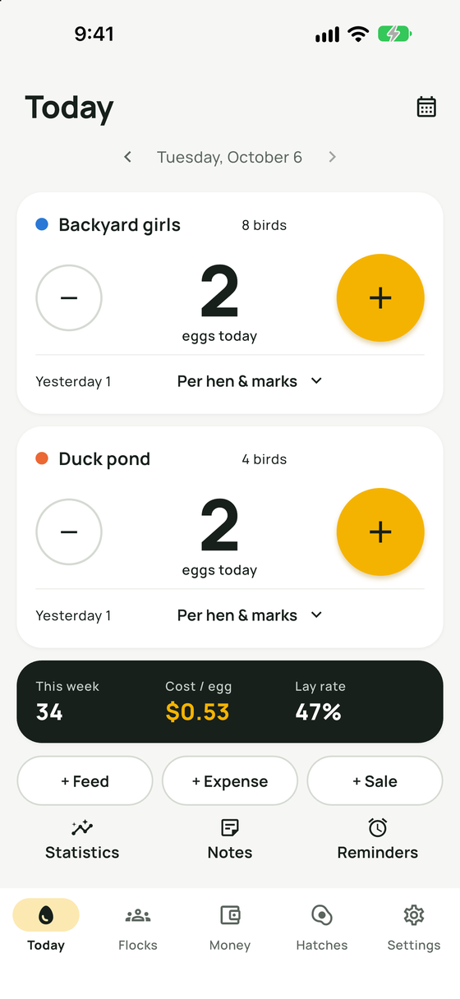
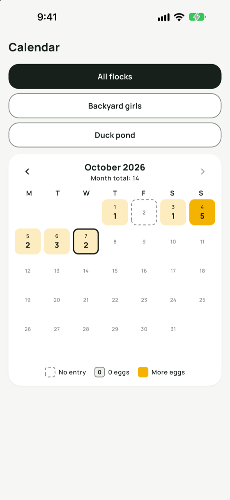
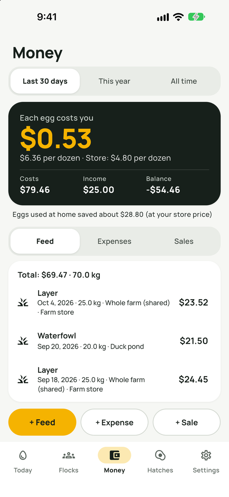
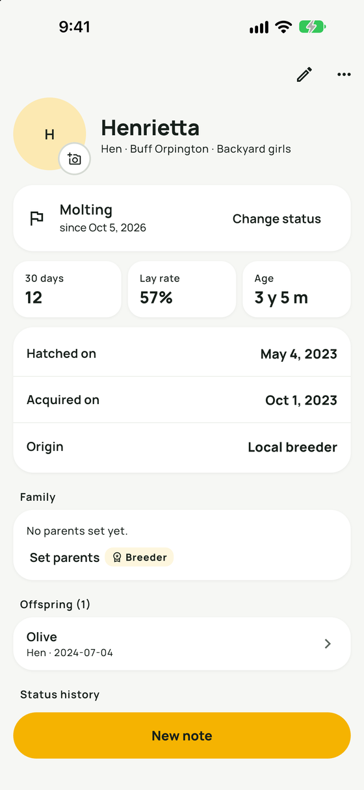
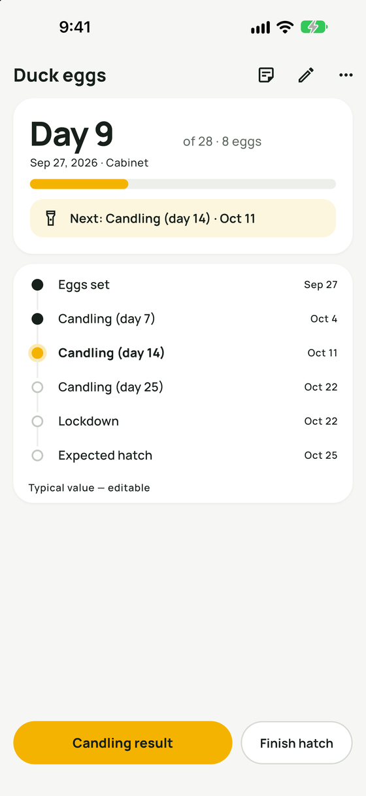
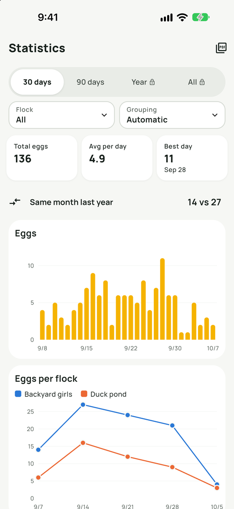

Yolkbook is een eierteller en koppeldagboek voor hobbyhouders van kippen, eenden, kwartels, ganzen en kalkoenen. Noteer de eieren van vandaag in twee tikken, zie wat elk ei je kost en plan je broedrondes. Je gegevens blijven op je telefoon.
Gratis beginnen
Werkt offline
Pro: één keer betalen
Binnenkort in deApp StoreBinnenkort opGoogle Play
Voor iPhone, iPad en Android. Wordt nu beoordeeld door Apple en Google.
Tuinkippen8 kippen
eieren vandaag
Tik op + alsof je net uit het kippenhok komt.
Apps komen en gaan. Je eiernoteringen blijven.
Toen een populaire gratis eierteller uit de App Store verdween, raakten houders er jaren aan legcijfers mee kwijt. Yolkbook is zo gebouwd dat jou dat niet kan overkomen: er is geen account dat kan worden opgeheven en geen server van ons die uit kan gaan.
Bewaard op je telefoon
Koppels, eieren, kosten, broedrondes, notities en foto's staan in de app op je toestel. Er gaat niets naar ons.
Back-up met één tik
Bewaar één back-upbestand in Bestanden, iCloud Drive, Google Drive of je mail en zet het terug op elke telefoon, iPhone of Android.
Gewone bestanden die je zelf opent
Exporteer eieren, uitgaven, vogels en broedrondes als CSV voor elk spreadsheetprogramma, of als pdf-rapport per maand en per jaar.
Wat je met Yolkbook kunt
Zes schermen voor alles wat een klein koppel dagelijks vraagt, van de eiertelling 's ochtends tot de uitkomstdag drie weken later.
De dag genoteerd in twee tikken
Het Vandaag-scherm heeft een grote teller per koppel. App openen, op + tikken, klaar.
Widget op je beginscherm met +1 en −1 per koppel
Optioneel tellen per hen, zodat je ziet wie er legt
Eikenmerken: dubbele dooier, zachte schaal, gebroken en meer
Houd bij welke eieren je verkoopt, weggeeft of zelf gebruikt

Elke dag van de maand in beeld
Een kalender kleurt elke dag naar het aantal eieren dat je raapte. Dagen die je vergat te noteren zien er anders uit dan dagen met nul eieren, zodat je de gaten makkelijk opvult.

Weet wat een ei echt kost
Noteer voer, strooisel en andere uitgaven in een paar seconden; de app onthoudt wat je de vorige keer kocht. Yolkbook deelt je kosten door je eieren.
Kosten per ei en per dozijn, naast je winkelprijs
Eierverkoop en een lopend saldo
Uitrusting zoals een nieuw hok telt niet mee in de kosten per ei
Je eigen valuta en doosgrootte (6, 10, 12…)

Een kaart voor elke vogel
Geef je hennen een naam en bewaar hun foto's, ras, uitkomstdatum en status: legt, broeds, in de rui, legt niet. Elke vogel heeft een eigen geschiedenis en eigen notities.
Notities met datum, labels en foto's, in je eigen woorden
Herinneringen volgens je eigen schema, bijvoorbeeld om het hok schoon te maken
Locatiegegevens worden verwijderd uit elke foto die je toevoegt

Broedrondes op de kalender
Leg eieren in de broedmachine of onder een broedse hen en Yolkbook zet de schouwdagen, machine dicht en de uitkomstdag voor je klaar, met een herinnering voor elke stap.
Uitkomstpercentage van de ingelegde en van de bevruchte eieren
Uitgekomen kuikens met één tik aan een koppel toevoegen
Gangbare aantallen dagen voor zes soorten, altijd aan te passen

Grafieken en rapporten Pro voor de hele geschiedenis
Grafieken voor eieren, eieren per koppel, legpercentage, kosten per ei, voer per maand en je saldo. Daarnaast zie je hoe deze maand zich verhoudt tot dezelfde maand vorig jaar en hoeveel eieren elke hen met een naam heeft gelegd.

Voor de vogels die jij houdt
Elk koppel heeft een eigen soort, dus de broedkalender begint met het gebruikelijke aantal dagen voor die soort.
Kippen
21dagen tot uitkomst
Eenden
28dagen tot uitkomst
Muskuseenden
35dagen tot uitkomst
Kwartels
17dagen tot uitkomst
Ganzen
30dagen tot uitkomst
Kalkoenen
28dagen tot uitkomst
Gangbare waarden als startpunt. Je past ze bij elke broedronde aan. Yolkbook geeft geen veterinaire of voertips; de app legt vast wat jij invoert.
De gegevens van je koppel blijven op je telefoon
We hebben Yolkbook gebouwd zonder accounts en zonder servers. Er is dus niets van jou dat wij kunnen bewaren, verkopen of kwijtraken.
Geen registratieOpen de app en begin met tellen.
Geen advertenties of trackingDe app bevat geen enkele vorm van analytics.
OfflineDe enige verbinding is die met de winkel, als je iets koopt.
VeiligheidskopieënDe app maakt een kopie voordat je iets terugzet en vóór elke update.
De gratis versie heeft geen tijdslimiet en is compleet voor een klein koppel. Pro haalt de limieten weg met één betaling.
Gratis
$ 0
zo lang als je wilt
Eierteller en widget op je beginscherm
Kosten per ei, verkoop en saldo
1 koppel met maximaal 6 vogels met naam
1 broedronde tegelijk
Statistieken van de laatste 90 dagen
Back-ups en CSV-export
Pro
$ 14,99
één betaling, geen abonnement
Alles uit Gratis
Onbeperkt koppels en vogels
Meerdere broedrondes tegelijk
Je hele geschiedenis in grafieken en saldo
Pdf-rapporten per maand en per jaar
Probeer alle functies van Pro 14 dagen gratis. Je start de proef wanneer je wilt en daarna wordt er niets afgeschreven.
Breeder Pack
$ 9,99
eenmalige uitbreiding
Eenvoudige stamboom: moeder, vader, nakomelingen en een stamboom over drie generaties
Broedgeschiedenis per broedmachine, ouders, soort en jaar
Uitkomstkaart (PDF) voor de verkoop van kuikens
Pro en Breeder Pack samen: $ 19,99.
Prijzen in Amerikaanse dollars. De App Store en Google Play tonen de prijs in je eigen valuta. Aankopen zijn gekoppeld aan je Apple ID of Google-account en kun je op een nieuwe telefoon herstellen.
In acht talen
De app volgt de taal van je telefoon, ook voor datums, getallen en valuta.
Nederlands
English
Polski
Deutsch
Français
Svenska
Italiano
Español
Vragen van houders
Kan ik mijn oude eiergegevens meenemen?
Ja. Importeer dagelijkse eiertellingen uit een spreadsheet of uit de CSV-export van een andere app. Je hebt een kolom met de datum en een kolom met het aantal eieren nodig; een kolom met het koppel is optioneel.
Kan ik overstappen van iPhone naar Android, of andersom?
Ja. Maak in de instellingen een back-upbestand, bewaar het in de cloud of mail het naar jezelf en zet het terug op de nieuwe telefoon. Je foto's zitten ook in het bestand.
We zorgen met z'n tweeën voor de kippen. Kunnen we één koppel delen?
Elke telefoon houdt zijn eigen gegevens bij en live synchroniseren kan nog niet. Je kunt wel een back-upbestand van een andere telefoon samenvoegen; als op beide telefoons dezelfde dag is genoteerd, blijft de nieuwste invoer staan.
Is er een abonnement?
Nee. De gratis versie heeft geen tijdslimiet. Pro en Breeder Pack betaal je één keer.
Wat gebeurt er als de proefperiode van 14 dagen afloopt?
De app gaat terug naar de gratis versie. Alles wat je hebt ingevoerd blijft bewaard en je kunt het nog steeds bekijken en exporteren.
Heeft Yolkbook een internetverbinding nodig?
Nee. Alles werkt offline. De app maakt alleen verbinding met de App Store of Google Play als je iets koopt of een aankoop herstelt.
Op welke telefoons werkt de app?
iPhone en iPad met iOS 15 of later, en Android-telefoons en -tablets met Android 7.0 of later. Voor de interactieve widget op de iPhone is iOS 17 nodig.
Geeft Yolkbook tips over gezondheid of voer?
Nee. Yolkbook legt vast wat jij invoert. Referentiewaarden zoals het aantal broeddagen zijn gangbare startwaarden die je zelf kunt aanpassen.
Begin met de eieren van vandaag
Installeer Yolkbook, geef je koppel een naam en tik op + voor het eerste ei. Binnen een minuut ben je klaar.